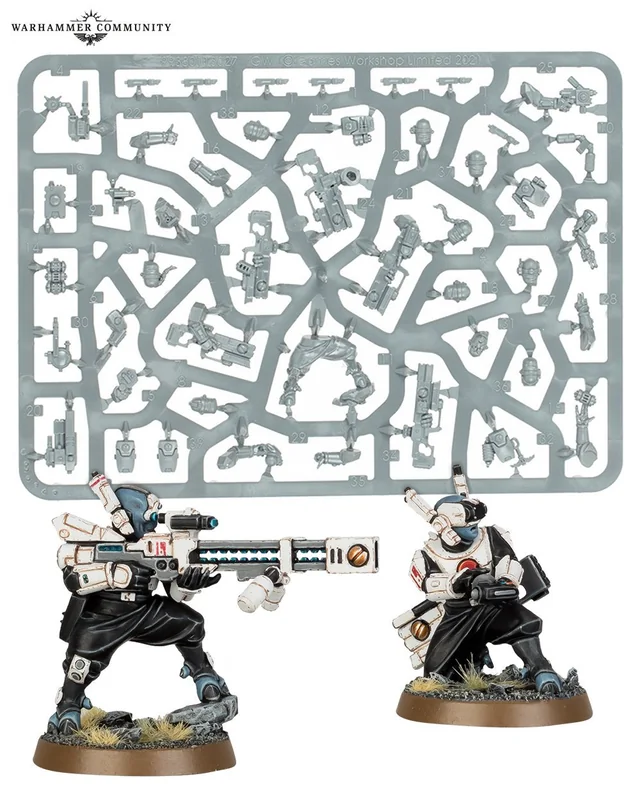
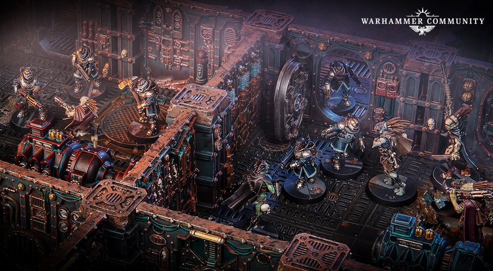

Building your Kill Team
What to Know
An important thing to know about Kill Team, or nearly any other combat game that uses models, is that the game does not come pre-assembled. You'll have to make them yourself! You will have to cut them out of sprues, file any excess plastic, glue them together, place them on a base, and even paint them. This may sound like a herculean task to the uninitiated, but it ensures that the players have really made their team their own (or you could purchase them assembled and painted, but that's much less fun). Below is a picture of the Kill Team:Pathfinders, and what comes out of their box, a sheet of gray plastic, and the final product professionally painted.
After you've put your team together, and your opponent has done the same, you both need to agree on what sort of game you are playing, as well as where the skirmish will take place. To do this, you can purchase official Kill Zones from Games Workshop, or make your own out of whatever you find around the house, cereal boxes, cups, binders, or whatever else you may find to make the fight more interesting. if you do decide to pick up an official Kill Zone, you'll need to assemble and paint it as well, making the fight all the more personal, expanding the experience even further.
If you are looking to dive straight in, a short run-down of the rules was made by the games creators.
How to Achieve Victory
For Glory, Conquest, or just plain Fun
To win a game, players will be competing to score victory points from three different Operations, Joint Ops, Kill Ops and Crit Ops.
- Joint Ops pair the players against the game, both using the same team against the game, encouraging teamwork and giving new players experience in movement and gameplay.
- Kill Ops pit the two players in a race to see who can eliminate the other team most effectively.
- Crit Ops have players compete over an objective, such as a vital command post, or important battlefield data/loot.
- In special situations, these can be combined, or tinkered with so that multiple ops can happen at once.
How to Play
Before playing, players will need to agree on a setting. Whether that is an official Kill Zone or whatever you find around the house, some specific rules need to be followed to make a game "official" Pictured below is the setting of Gallowdark, a combat zone on an immense spaceship, famous for its close quarters, and long hallways, which makes for a very engaging game that encourages players to get personal.
Both players will take a moment to explain their kill teams special abilities that last for the entire duration of the fight, and then take turns positioning your miniatures on the board. After this, players will use those abilites by spending points, or will save them for later. Players then take turns activating models to either fight the enemy or do an objective, depending on whats available, At the end of the 4th round, players will count their points depending on the operation, and whoever has the highest score will have won! A more in depth list of rules can be found here.